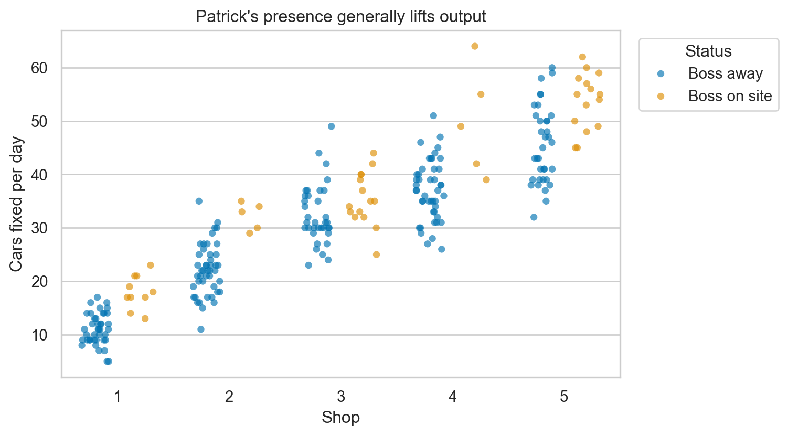
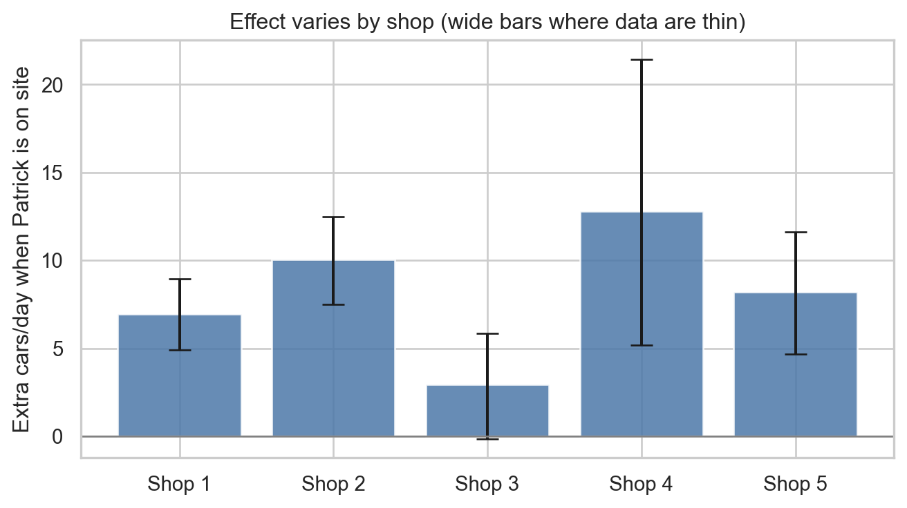
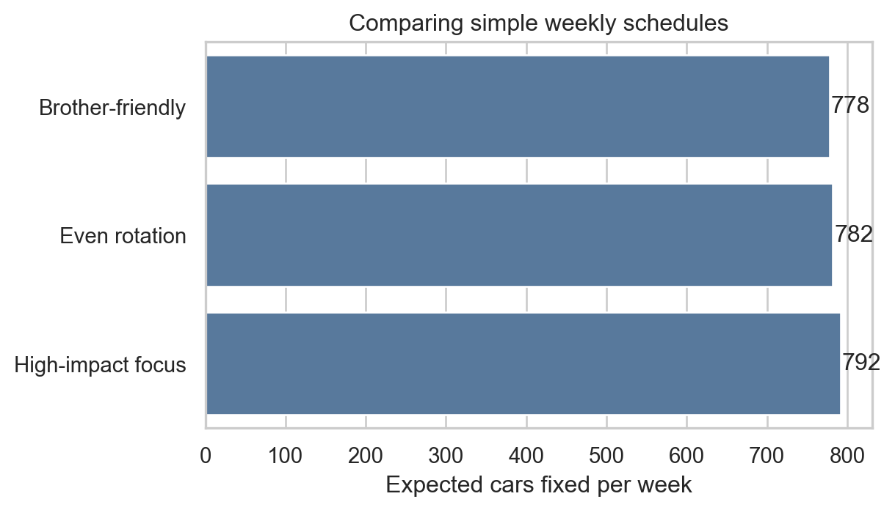

| Shop | Boss absent avg | Boss present avg | Lift (cars/day) | Lift 95% low | Lift 95% high | Boss-present days | |
|---|---|---|---|---|---|---|---|
| 0 | 1 | 11.05 | 18.00 | 6.95 | 4.925000 | 8.950000 | 10 |
| 1 | 2 | 22.13 | 32.20 | 10.07 | 7.488889 | 12.488889 | 5 |
| 2 | 3 | 32.46 | 35.40 | 2.94 | -0.143333 | 5.847857 | 15 |
| 3 | 4 | 37.02 | 49.80 | 12.78 | 5.198333 | 21.445000 | 5 |
| 4 | 5 | 45.51 | 53.73 | 8.22 | 4.666429 | 11.628810 | 15 |
Where Patrick Should Show Up
A short plan to fix more cars each week
What we found (quick read)
- When Patrick shows up, productivity jumps about 9 more cars per day on average (38.5 vs 29.2).
- Biggest boosts show at Shop 4 (+12.8 cars/day) and Shop 2 (+10.1); Shop 5 and 1 also gain; Shop 3 is smaller and uncertain.
- A schedule that hits Shop 4 twice each week and Shops 2/5/1 once adds about 51 cars per week versus being away (about 10 more than evenly rotating).
Data snapshot
- 250 workdays across 5 shops (50 days each).
- Patrick was on site 50 days total (5–15 days per shop); away 200 days.
All 250 days at a glance

How much does Patrick move the needle?

- Shops 4 and 2 pop the most (+13 and +10 cars/day). Caveat: only 5 boss-present days in each, so the band is wide.
- Shops 5 and 1 are solid movers (+8 and +7).
- Shop 3 shows a smaller lift (~+3) and its interval brushes zero; schedule it only if other priorities are covered or for personal reasons.
Scheduling playbook (5-day week)
Assumption: all five shops run every weekday. Patrick chooses one shop per day; others run without him.
| Scenario | Expected cars/week | vs no visits | |
|---|---|---|---|
| 0 | Even rotation | 781.8 | 41.0 |
| 1 | High-impact focus | 791.7 | 50.8 |
| 2 | Brother-friendly | 777.8 | 36.9 |

Suggested schedule:
- High-impact focus: Shop 4 twice; Shops 2, 5, and 1 once each. Roughly 791 cars/week, ~10 more than an even rotation and ~51 more than never visiting.
- Need to see family at Shop 3? Swap one of the single-day stops for Shop 3; expect to give up ~4 cars/week versus the high-impact plan.
Confidence and caveats
- Only 50 boss-present days total; Shops 2 and 4 have just 5 on-site days each, so their true lift could be lower or higher (note the wide error bars).
- Data are 250 past days; shocks like staffing changes or seasonality could change results. Re-check monthly as new data arrive.
- Revenue math scales with your price per car (not provided here). Multiply the lifts by your per-car margin to estimate dollars.
Next steps to keep improving
- Track boss visits and cars fixed going forward; refresh the report each month.
- If you shift staffing or add promotions, note the date so we can explain any jumps or dips.
- Once more on-site days accumulate at Shops 2 and 4, rerun the bootstraps to tighten the intervals and refine the schedule.